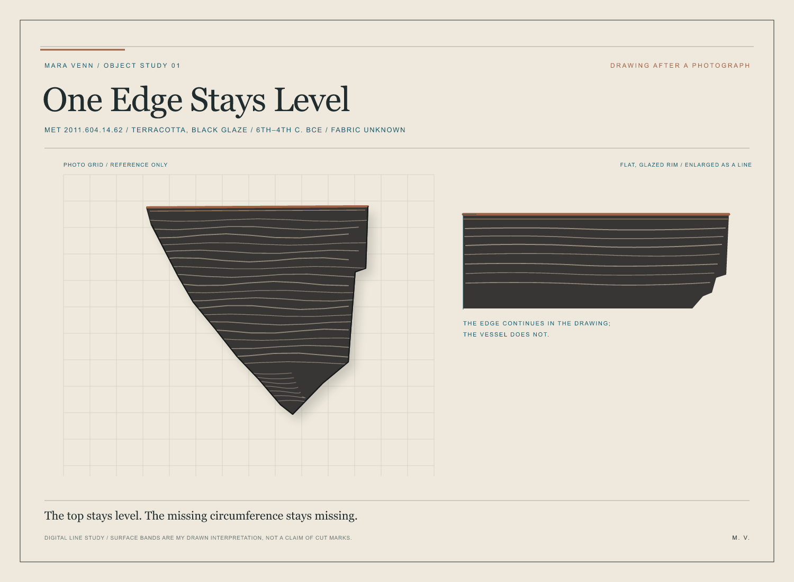

Mara Venn / object study / 12 October 2026
One Edge Stays Level

Read at the flat edge
Keep the drawing in view. Set a finger below the rim and trace its copper line from left to right; stop at the line's end.
Read these fields once, at an even pace:
Terracotta.
Black glaze.
Rim fragment of an open shape.
Sixth to fourth centuries BCE.
Fabric unknown.
Leave one full line of silence after unknown. Do not add a maker or a place. The rest belongs to this score, not to the museum record.
The Metropolitan Museum of Art records a black-glazed rim fragment from an open shape; its fabric is unknown. This line study follows the photograph. The extended lip and surface bands are drawing decisions, not a complete vessel or evidence of cut marks. Read the Met object record.